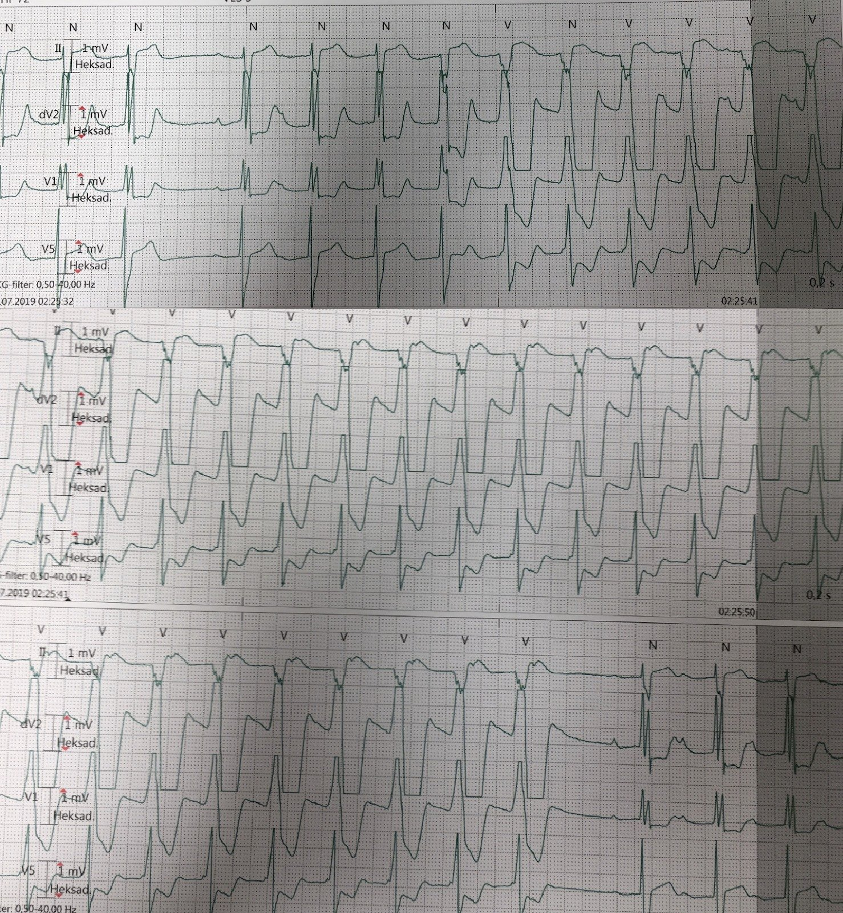
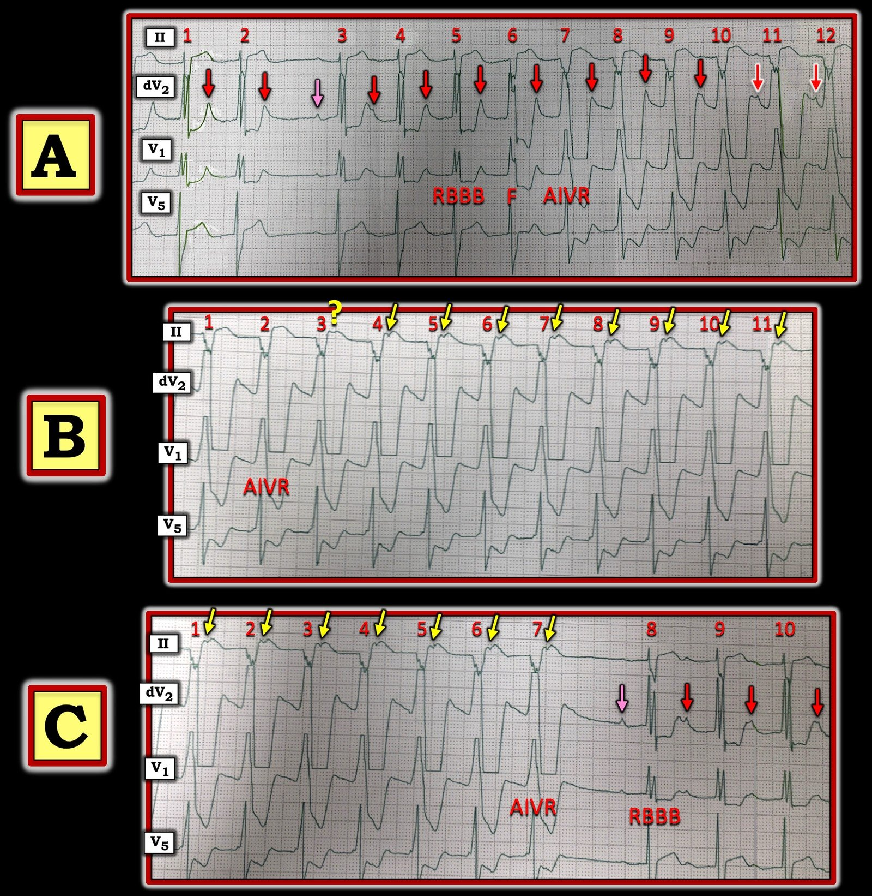
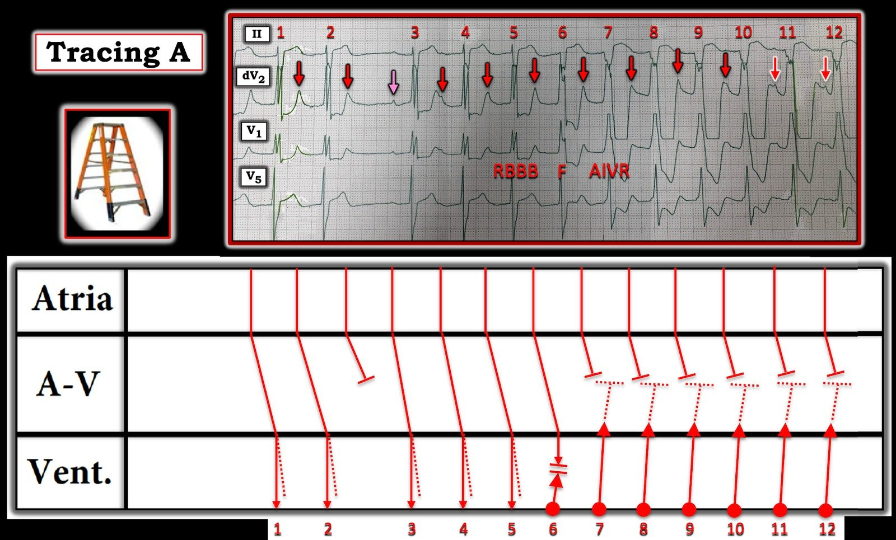
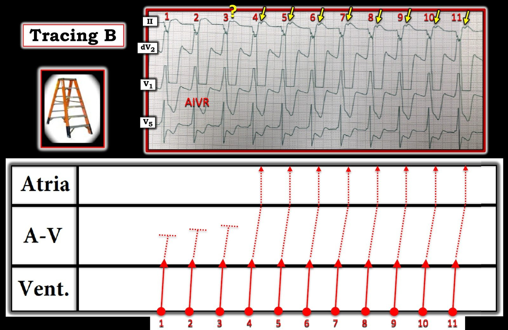
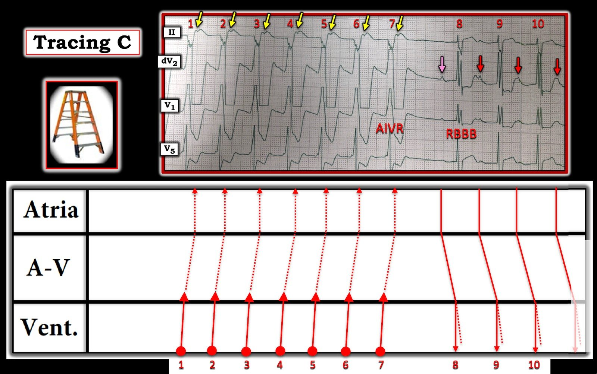

03/10/2023 — Một dải nhịp thú vị. Đây là nhịp gì?
Bản dịch tiếng Việt của bài "An interesting rhythm strip. What is this rhythm?" – Dr. Smith’s ECG Blog. Giữ nguyên toàn bộ 6 hình ảnh của bản gốc.
Bài của Magnus Nossen, từ Na Uy
Tôi được cho xem bản in một dải nhịp của một bệnh nhân đang theo dõi từ xa (telemetry) và được hỏi chuyện gì đang diễn ra? Có bốn chuyển đạo được hiển thị (II, dV2, V1 và V5). Ba hình xếp chồng lên nhau là các dải nhịp liên tiếp, mỗi dải dài 10 giây. Bệnh nhân được theo dõi từ xa vì nhồi máu cơ tim cấp. Bạn có thể mô tả đúng chuyện gì đang diễn ra trong dải nhịp thú vị này không?


Bản ghi bắt đầu bằng nhịp xoang với hình ảnh blốc nhánh phải. Sóng P không dễ nhận ra ở các nhát đầu, nhưng chúng có mặt, chồng lên sóng T của QRS đi trước. Sóng P chồng lên trên sóng T thứ ba nhìn thấy được không dẫn truyền (vì vậy, có một khoảng ngưng theo sau sóng P đó).
QRS tiếp theo có thể thấy rõ có sóng P xoang đi trước, và các nhát kế tiếp cho thấy rõ blốc AV độ II loại I (Wenckebach) với khoảng PR kéo dài dần. Có thể thấy các sóng P “di chuyển” ngày càng gần hơn và lấn vào sóng T, làm cho sóng T trông nhọn hơn.
Sau đó, sau ba nhát xoang được dẫn truyền hoàn toàn qua nút AV, xuất hiện một nhát có hình dạng QRS khác so với cả nhát đi trước lẫn nhát theo sau. Nhát này là nhát hỗn hợp giữa nhát xoang trên thất và một nhịp tự thất gia tốc (AIVR) đang xuất hiện.
Sau đó AIVR dần dần chiếm quyền và các sóng P xoang lại trở nên rõ hơn trong lúc phân ly nhĩ thất đồng nhịp (isorhythmic) đang diễn ra. Cuối cùng các sóng P xoang không còn nhìn thấy được. (bị vùi trong QRS).
Tình trạng này tiếp diễn một lúc cho đến khi xuất hiện dẫn truyền thất-nhĩ (VA) ngược dòng (nhát thứ 4 trên bản ghi thứ 2) với các sóng P âm nhìn thấy được trong đoạn ST của các phức bộ AIVR. Điều thú vị là dẫn truyền VA ngược dòng không cho thấy bất kỳ dấu hiệu chậm dẫn truyền nào. Đây là một ví dụ tốt cho thấy blốc Wenckebach theo chiều xuôi dòng không có nghĩa là bắt buộc phải có chậm truyền xung động theo chiều ngược dòng. Cuối cùng AIVR ngừng lại, nhịp xoang và blốc AV độ 2 loại I trở lại.
Để có phân tích đầy đủ và minh họa rõ hơn, xin xem bình luận của Dr Grauer bên dưới.

===================================
BÌNH LUẬN CỦA TÔI, bởi KEN GRAUER, MD (3/10/2023):
===================================
Tôi bị cuốn hút bởi các bản ghi hôm nay — gồm 3 dải nhịp 4 chuyển đạo, ghi liên tiếp từ một bệnh nhân đang được theo dõi từ xa vì nhồi máu cơ tim cấp (MI).
- Tôi hoàn toàn đồng ý với diễn giải của Dr. Nossen về nhịp thú vị nhưng phức tạp này.
- Tôi nghĩ sẽ có ích nếu phân tích từng phần nhịp hôm nay — với mục tiêu minh họa một loạt kỹ thuật hữu ích, áp dụng được để diễn giải nhanh gọn, tiết kiệm thời gian bất kỳ rối loạn nhịp phức tạp nào.
==============================
Cách tiếp cận của tôi với nhịp hôm nay:
Tôi sẽ bắt đầu bằng việc điểm qua một số việc DỄ làm — nhưng giúp việc diễn giải dễ dàng hơn rất nhiều.
- Hãy CHẮC CHẮN rằng bệnh nhân của bạn ổn định huyết động! Nếu bệnh nhân tụt huyết áp, không tỉnh táo, hoặc có triệu chứng nặng theo cách khác — Hãy điều trị bệnh nhân trước khi đi vào những chi tiết rắc rối của nhịp.
- Bệnh nhân hôm nay đã ổn định huyết động (và thậm chí không phải bệnh nhân của Dr. Nossen) — nhưng việc đang theo dõi từ xa sau một nhồi máu cơ tim gần đây là lý do chính đáng để muốn biết nhịp bất thường này là gì.
- NẾU có nhiều hơn một đặc điểm trong một rối loạn nhịp — Hãy bắt đầu với các yếu tố DỄ HƠN (và để các khía cạnh khó hơn của nhịp lại sau cùng). Bạn sẽ thường ngạc nhiên thú vị khi thấy lời giải thích cho các đặc điểm khó hơn thường trở nên rõ ràng một khi bạn đã diễn giải xong một số đặc điểm ít khó hơn.
- Đánh số các nhát bóp. Nhờ vậy bạn và đồng nghiệp có thể chắc chắn rằng mọi người đang nói về cùng một (hoặc các) phần của bản ghi. (Việc này cũng tiết kiệm thời gian cho CHÍNH BẠN — vì bạn có một điểm mốc được đánh số để nhanh chóng tìm lại phần bản ghi mà bạn đang xem).
- Bây giờ — Đánh dấu các sóng P rõ ràng.
==============================
Để cho rõ, trong Hình 1 — tôi đã tái hiện và đánh dấu 3 dải nhịp của ca hôm nay, được tôi gắn nhãn A, B và C.
- LƯU Ý: 4 chuyển đạo theo dõi dùng trong 3 bản ghi này là các chuyển đạo II, dV2, V1 và V5 — trong đó dV2 là một chuyển đạo dẫn xuất (derived), được tái dựng từ dữ liệu của một hệ thống ghi 6 điện cực.
Hãy NHÌN lại 3 dải nhịp trong Hình 1:
CÂU HỎI:
- BẠN sẽ bắt đầu đánh giá rối loạn nhịp phức tạp hôm nay như thế nào?
- Bạn có hiểu TẠI SAO tôi gắn nhãn 3 bản ghi này theo cách tôi đã làm không?


Cách tiếp cận CỦA TÔI:
Lưu ý rằng tôi đã đánh dấu bằng các mũi tên màu toàn bộ hoạt động nhĩ mà tôi có thể thấy rõ trên các bản ghi hôm nay.
- Đặc điểm trên các bản ghi hôm nay “hút mắt” tôi nhất — là các sóng P có mũi tên HỒNG. MẤU CHỐT để diễn giải các rối loạn nhịp phức tạp thường nằm ở việc “tìm ra một chỗ ngắt trong nhịp” — và cả hai sóng P có mũi tên HỒNG trong Hình 1 đều kết thúc một khoảng ngưng ngắn (tức là, “chỗ ngắt” trong Nhịp A và C). Cả hai sóng P có mũi tên HỒNG này xác định rõ 2 nhát mà chúng ta biết chắc là được dẫn truyền, dù với khoảng PR dài.
- Tiếp theo tôi đánh dấu tất cả các sóng P xoang (mũi tên ĐỎ).
=================================
Lời nhắc hữu ích: Dùng compa đo (calipers) giúp việc diễn giải bất kỳ rối loạn nhịp phức tạp nào dễ dàng hơn rất nhiều (và nhanh hơn)!
- XIN NHẤN MẠNH: Tôi không khuyên bạn dừng lại để lấy compa đo ra nếu bệnh nhân trước mặt bạn đang “suy sụp nhanh”. Luôn điều trị bệnh nhân! Nhưng NẾU bệnh nhân ổn định huyết động và bạn có “chút” thời gian (và bạn thật sự muốn biết nhịp đó là gì) — dùng compa đo sẽ giúp tăng tốc và hỗ trợ cực kỳ nhiều cho việc diễn giải của bạn!
=================================
Tập trung trước tiên vào Nhịp A:
- Lưu ý rằng nhịp nhĩ nền ở A đều một cách đáng ngạc nhiên (Các mũi tên HỒNG và ĐỎ cách đều nhau).
- Như đã nêu ở trên — nhát #3 ở A có được dẫn truyền, dù kèm blốc AV độ 1.
- Mặc dù chúng ta không có điện tâm đồ 12 chuyển đạo — hình dạng QRS ở nhát dẫn truyền #3 này có vẻ phù hợp với RBBB (QRS giãn rộng với dạng RsR’ ở chuyển đạo V1 — và sóng S tận rộng ở chuyển đạo bên V5) — và kèm LAHB (phức bộ rS ở chuyển đạo II, với phần âm chiếm ưu thế ở chuyển đạo này).
- Hình dạng RBBB/LAHB này kéo dài trong 2 nhát tiếp theo (tức là, nhát #4 và 5 ở A) — nhưng hình dạng QRS sau đó thay đổi bắt đầu từ nhát #6.
- Dùng compa đo giúp dễ nhận ra rằng các sóng P đều đặn tiếp tục suốt nhịp A, tạo ra một “gai” thêm vào sóng T của các nhát #4,5,6,7,8.
- BẰNG CHỨNG — cho thấy hiện tượng gai trên sóng T này chính là kết quả của các sóng P ẩn, đúng lúc — xuất hiện về cuối bản ghi, khi các sóng P đều đặn này bắt đầu tách ra khỏi sóng T của các nhát đi trước #10 và 11.
- Điểm MẤU CHỐT: Khoảng PR tăng dần khi chúng ta đi từ nhát #3 — sang nhát #4 — sang nhát #5 ở Nhịp A. Việc nhịp sóng P ở A đều — và khoảng PR ngay trước khoảng ngưng (tức là, khoảng PR trước nhát #2) — rõ ràng dài hơn khoảng PR ở cuối khoảng ngưng (khoảng PR trước nhát #3) — xác định nhịp hôm nay (ít nhất là với các nhát từ #1 đến #5 ở A) — là blốc AV độ 2, Mobitz loại I (tức là, Wenckebach AV).
- NHƯNG — Hãy để ý khoảng PR trở nên ngắn như thế nào ở cuối Nhịp A (tức là, các mũi tên ĐỎ-TRẮNG trước nhát #11 và 12). Đây không còn là Wenckebach AV nữa. Thay vào đó — chắc chắn phải là sự thay đổi hình dạng QRS bắt đầu từ nhát #6 đại diện cho một nhịp độc lập!
- Nhìn vào hình dạng QRS ở chuyển đạo phía trái I (giờ cho thấy một phức bộ rộng hơn, phân mảnh và gần như âm hoàn toàn) — và ở chuyển đạo phía phải V1 (không còn ba pha nữa — mà thay vào đó biểu hiện một sóng R đơn pha) — cho ta biết đây là một nhịp thất. Với tần số của các nhát #7 đến #12 (khoảng ~85/phút) — và việc không có sóng P được dẫn truyền — các nhát từ #7 đến #12 hẳn phải là AIVR (nhịp tự thất gia tốc — Accelerated IdioVentricular Rhythm).
- BẰNG CHỨNG — cho thấy các nhát #7 đến #12 ở Nhịp A có nguồn gốc từ thất ( = AIVR) — đến từ thực tế là nhát #6 là một nhát hỗn hợp (tức là, có hình dạng QRS và ST-T trung gian giữa nhát #5 và nhát #7 — thấy rõ nhất ở chuyển đạo V1).
- LƯU Ý: Lý do nhịp AIVR có thể “chiếm quyền” kiểm soát nhịp — là vì tần số của nhịp thất gia tốc này (tức là, ~85/phút) — nhanh hơn một chút so với tần số của các sóng P xoang nền.
- LƯU Ý lâm sàng: Mặc dù chúng ta chỉ biết rằng bệnh nhân hôm nay đang được theo dõi vì nhồi máu cơ tim cấp (MI) — việc phát hiện blốc hai phân nhánh (RBBB/LAHB) + blốc AV độ 1 + blốc AV độ 2 (Wenckebach AV) + AIVR đều có thể phù hợp với chẩn đoán nhồi máu cơ tim cấp này (cần đối chiếu lâm sàng để xác định có cần máy tạo nhịp hay không).
- “Tin tốt” — là sự xuất hiện của AIVR trong bối cảnh OMI có thể là một dấu hiệu “tốt”, vì nó có thể cho thấy tái tưới máu của động mạch “thủ phạm” (Để biết thêm về AIVR — Xem bình luận của tôi ở Điểm #2 cuối trang trong bài ngày 8 tháng Tư năm 2022 trên Dr. Smith’s ECG Blog).
Tập trung tiếp theo vào Nhịp B:
- Cùng hình dạng QRS mà chúng ta đã xác định là phù hợp với AIVR bắt đầu từ nhát #7 ở A — tiếp tục suốt 11 nhát mà ta thấy ở Nhịp B. Như vậy, AIVR hiện diện suốt Nhịp B.
- Dù vậy — bắt đầu từ nhát #4 — thấy được các sóng P ngược dòng (mũi tên VÀNG phía trên sóng lệch âm trong đoạn ST của các nhát #4 đến #11).
- Lưu ý rằng không có sóng lệch âm như vậy trong lúc AIVR ở A — cũng không có sóng P ngược dòng trong đoạn ST của nhát #1 và 2 ở B (Tôi đặt một Dấu Hỏi phía trên đoạn ST của nhát #3 ở B — vì tôi không chắc là có hay không có sóng P ngược dòng).
Kết thúc với Nhịp C:
- AIVR (kèm sóng P ngược dòng) — tiếp tục trong 7 nhát đầu của Nhịp C. Rồi nó ngừng lại. Tôi không biết vì sao dẫn truyền ngược dòng từ AIVR ngừng lại ở thời điểm này (vì không có thay đổi nào ở khoảng RP’) — nhưng có lẽ, việc không còn dẫn truyền ngược dòng sau nhát #7 ở C (tức là, Không còn “cài đặt lại” nút SA do dẫn truyền ngược dòng lên nhĩ) — cho phép nút SA có đủ thời gian để hồi phục, và tạo ra một sóng P xoang khác (mũi tên HỒNG trước nhát #8 ở C).
- Việc sóng P mũi tên HỒNG trước nhát #8 bắt lại nhịp giờ đây khởi đầu một chu kỳ Wenckebach khác (Lưu ý các phức bộ QRS của nhát #8,9,10 ở C trở lại hình dạng RBBB/LAHB — và khoảng PR lại một lần nữa tăng dần khi ta đi từ nhát #8 — sang #9 — sang #10).
=================================
Minh họa bằng GIẢN ĐỒ BẬC THANG nhịp hôm nay:
- Để cho rõ, trong Hình 2, 3 và 4 — tôi đã vẽ các giản đồ bậc thang (laddergram) để minh họa lời giải thích của tôi về cơ chế của nhịp hôm nay.


= = = = =
LƯU Ý: Các nhát từ #1 đến #5 được dẫn truyền kèm RBBB/LAHB (đường chấm chấm ở Tầng Thất của các nhát này biểu thị khiếm khuyết dẫn truyền trong các nhát trên thất này).
= = = = =
Các nhát từ #7 đến #12 biểu thị sự “chiếm quyền” (usurpation) nhịp bởi một nhịp AIVR nhanh hơn một chút so với nhịp sóng P xoang nền. Dẫn truyền ngược dòng đi được một phần qua Tầng Nút AV ngăn các sóng P xoang chậm hơn một chút dẫn truyền xuống thất trong thời gian AIVR kiểm soát nhịp.
= = = = =
Giản đồ bậc thang cho thấy nhát #6 là một nhát hỗn hợp.
= = = = =



